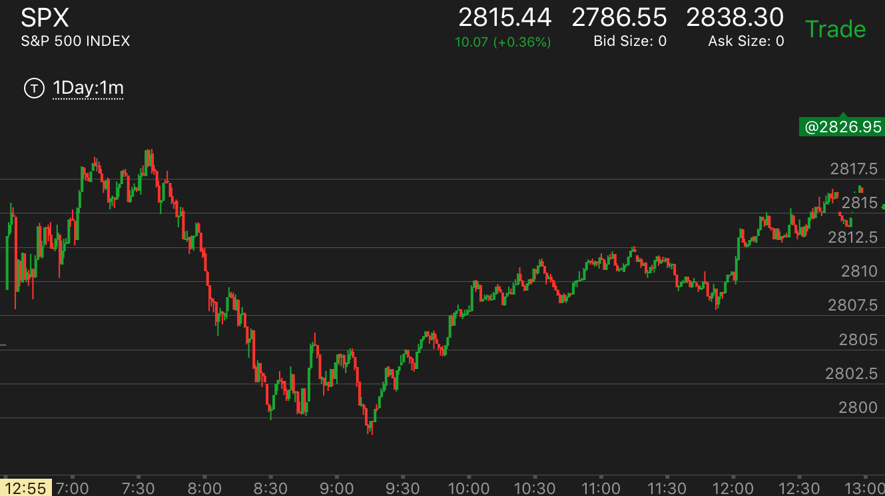
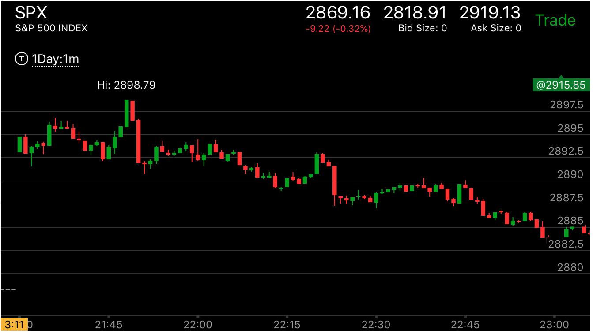
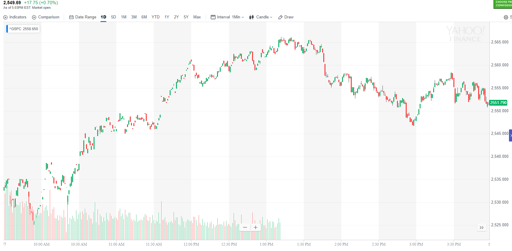
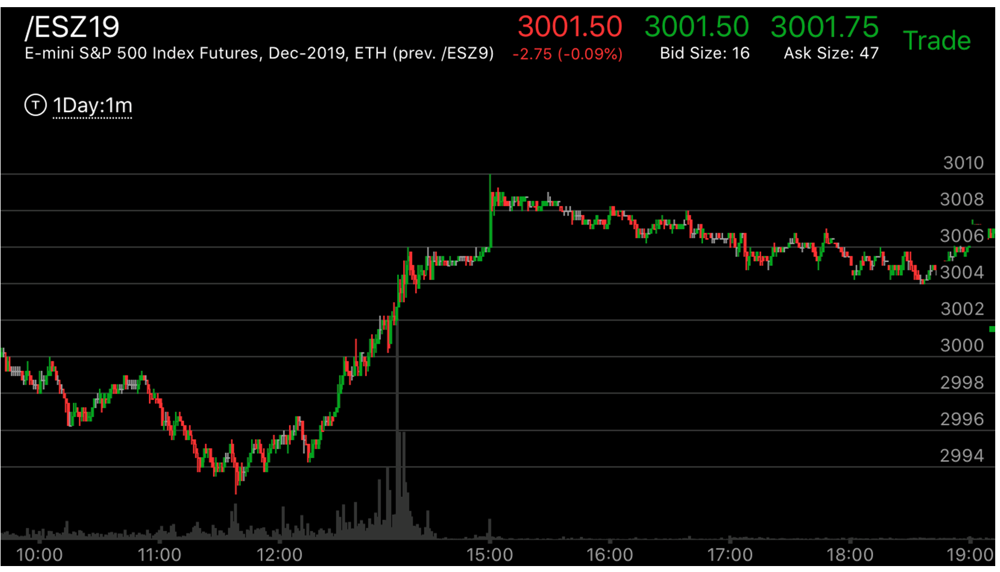
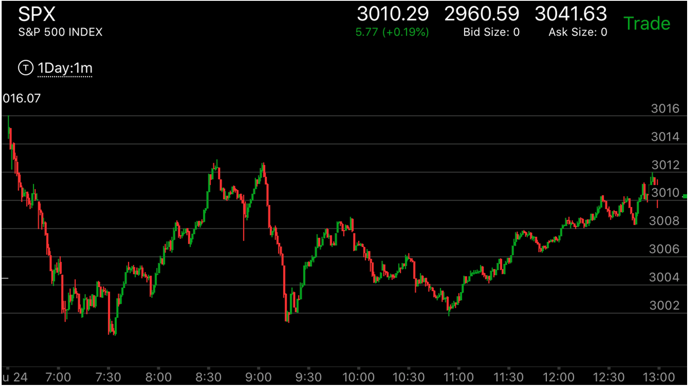
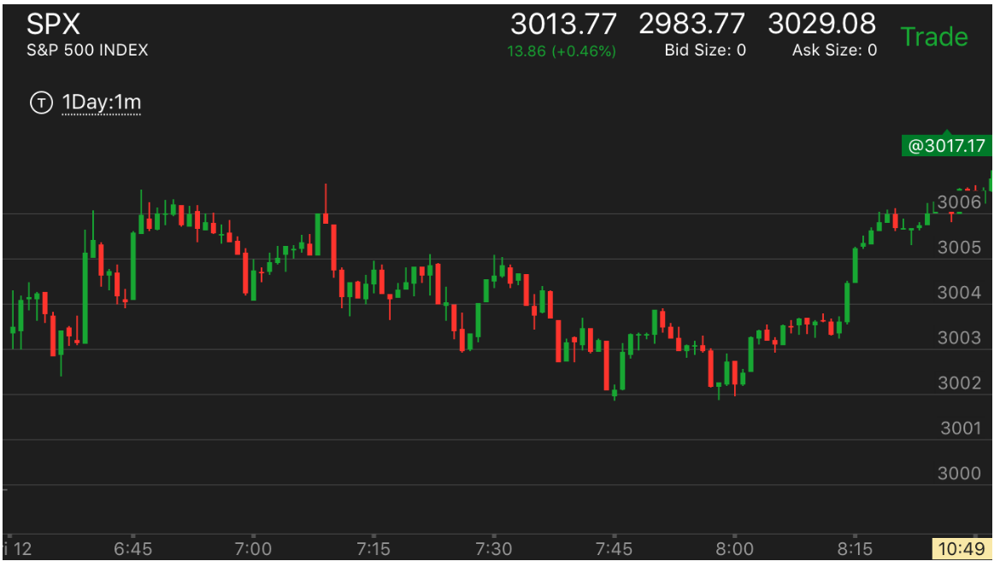
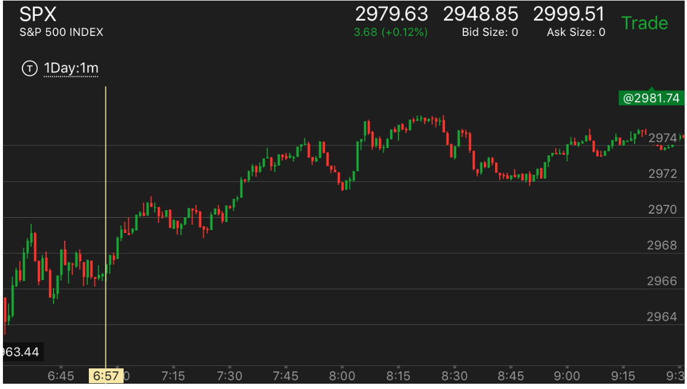
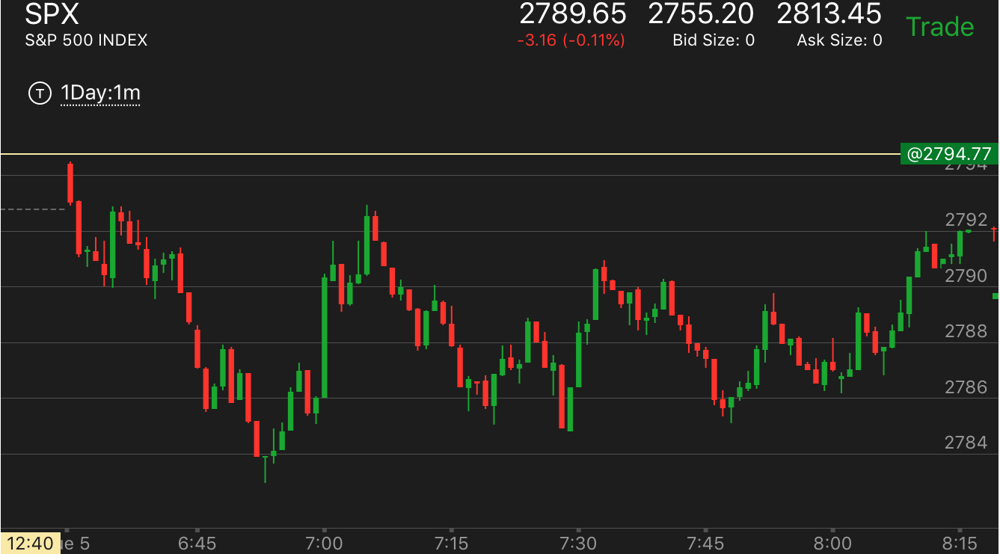

出现反转走势后，因为没有达到目标价格，而继续运动后，反转
- 出现了反向加速走势，但是没有到达位置，所以继续运动，但是不要以为它不会反转，而是没有到达合适的位置，
有时候需要一个合适的形状。
- 这个走势关键在于，它已经处于反转状态，而这个走势只是处于反转状态后走出的形态。
两段第二段运动超过了第一段，但是没有立刻反转，而是经过另一个
加速才反转，新低/新高并没有超过很多
第二段幅度超过了第一段，但是边缘形状不对，所以仍然运动，
直到形状正确为止。
出现了相对论走势，但是前面的走势要求新低或者新高，
所以继续运动，直到新低/新高为止
第二段下跌超过了第一段，但是没有立刻反转，而是经过另一个
加速才反转，新低/新高并没有超过很多
TOP

图示：7:50是第一浪下跌。为什么不是前面呢？因为它一开始下跌的时候，速度比较慢，
不断的反弹。这样不能算第一浪下跌。这个浪的跌幅是7个点。8：10开始的第二浪下跌。是9个点。第二浪
速度也不算慢。这个说明它已经应该反弹了。但是它没有立刻反弹，9:10 再次下跌，形成了下跌加速。这个下跌一定要创新低。这样才能坐实了加速这个动作。

图示：开盘后，两段上涨。但是第二段幅度有很多上影线，没有坐实。它下来后，再次加速上涨。创新高，形成了加速。
这样就反转了。随后的第一浪下跌是幅度很大的第一浪。
第二段幅度超过了第一段，但是边缘形状不对，所以仍然运动，
直到形状正确为止。
TOP

图示：11：30它大幅上涨，具备反转的力量。但是它的边缘是立刻下跌。
这样不对，它继续上涨后，超过原来的高点后，出现了走平冲高的走势。然后部分反转了。

图示：开盘后，大幅冲高，在7：00附近，它已经处于反转状态，
但是它的边缘是立刻下跌。一般这样不是一个顶部，它继续缓慢走高，直到7：20它冲高后，在高点停留，
这样才是一个顶部的样子，开始下跌。
出现了相对论走势，但是前面的走势要求新低或者新高，
所以继续运动，直到新低/新高为止
TOP


图示：收盘后，15：00出现了快速上涨后，走平。这个其实已经反转了。但是前一个走势要结束，必须超过3014. 所以它持续运动。直到开盘后，出现了3015，立刻下跌。进入跌势。
3015这个点持续不到一分钟。就反转了。

图示：7：10出现了快速下跌，然后在低点走平，这说明它处于升势。
但是它继续走低。说明这个升势需要一个更好的位置。它后面不断走低。走出一个三段走势。
7：45从3段走势反弹后，又走出一个两段下跌走势。这个走势的第二段速度快于第一段。会反转。
这时就是真的底部了。

图示：8：00快速下跌后，它的上涨速度更快。直接快速越过前面的高点。这说明大盘要反转。
但是它没有立刻反转。而是立刻回调。回调后，缓慢越过前面的高点，走平。这个其实就是一个加速走势。
前面到达高点后，立刻回调，而这个稍微超过高点后，没有回调，而是走平。而大盘已经处于反转状态。
所以会大跌。

图示：开盘后，连续下跌两个bar，说明处于跌势。6：35，快速反弹，但是没有新高，
它开始下跌。6：40开始的下跌，幅度很大，超过了开盘的下跌幅度。这样其实走势已经处于反转状态。
但是它立刻反弹，然后走低，走更低后，缓慢反弹。在低点的反弹速度远低于6：45反弹的速度。这个就是一个加速状态。
而前面已经出现了更大的两段走势。说明反转了。

图示：6:45开始的大涨，属于第二段。它超过了第一段。处于反转状态。
然后但是它立刻拉回，再次缓慢上涨。创新高。但是新高不是很大。它缓慢到了新高后，停留几分钟。然后大跌。